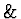

Theor. Phys.), 36 (1959) 842-849 {in Russian}
Appendix
The procedure "fourier" expands the equation in the Fourier series.
procedure fourier(FF,X);
% This procedure constructs Fourier series for polynomials
% of sin(x) and cos(x).
begin
scalar F;
for all AA , BB such that
df(AA,X) NEQ 0 AND df(BB,X) NEQ 0
let
cos(AA)*cos(BB)=(cos(AA-BB)+cos(AA+BB))/2,
sin(AA)*sin(BB)=(cos(AA-BB)-cos(AA+BB))/2,
sin(AA)*cos(BB)=(sin(AA-BB)+sin(AA+BB))/2,
sin(AA)**2=(1-cos(2*AA))/2,
cos(AA)**2=(1+cos(2*AA))/2;
F:=FF;
for all AA , BB such that
df(AA,X) NEQ 0 AND df(BB,X) NEQ 0
clear
cos(AA)*cos(BB),
sin(AA)*sin(BB),
sin(AA)*cos(BB),
sin(AA)**2,
cos(AA)**2;
return F;
end;
end;
This program have been written in REDUCE 3.6 and tested on computer with 16M bytes operating memory. The program constructs the system (5): Rjj=0 and finds a particular solution of this system. It use the procedure "fourier" to expand the equation in Fourier series. You can change the number of unknowns (parameter n). The number of equation is 3n. We assume that the solution is real and includes only odd harmonics.
out "Rjj.res";
in fourier$
n:=10$
operator a,c,u$
depend u,xx,tt$
% Expand the unknown function u and the equation in Fourier series.
u(xx,tt):=for j:=1:n sum a(2j-1)*sin((2j-1)*xx)*sin((2*j-1)*tt)$
equ1:=2*w1*df(u(xx,tt),tt,2)+fourier(fourier(u(xx,tt)**3,xx),tt)$
equat:={}$
% The frequency w_1 is proportional to a(1)^2 (c(1)=c_{\omega}).
w1:=c(1)*a(1)**2$
for j:=2:n do a(2*j-1):=c(2*j-1)*a(1)$
equ1:=equ1$
% Construct the system (5): R_{jj}=0.
for k:=1:3*n do
equat:=append(equat,
{16*df(equ1,sin((2*k-1)*xx),sin((2*k-1)*tt))/a(1)**3});
% Find a real solution of this system.
on rounded$
c(1):=0$
for k:=2:n do
<< for j:=k:n do c(2*j-1):=0;
clear c(1),c(2*k-1);
equat1:=first(equat);
c(1):=c(1)-equat1/df(equat1,c(1));
equatpr:=part(equat,k);
respr:=solve(equatpr,c(2*k-1));
while respr neq {} do
<< c(2*k-1):=part(respr,1,2);
if(c(2*k-1)=sub(i=-i,c(2*k-1)) and c(2*k-1)<1)
then respr:={}
else respr:=rest(respr);
>>;
test:=0;
while(test=0) do
<< test:=1;
clear c(1);
equat1:=first(equat);
c(1):=c(1)-equat1/df(equat1,c(1));
for j:=2:k do
<<
equatpr:=part(equat,j);
if(abs(equatpr)>10**(-11)) then
<< clear c(2*j-1);
test:=0;
equatpr:=part(equat,j);
respr:=solve(equatpr,c(2*j-1));
while respr neq {} do
<< c(2*j-1):=part(respr,1,2);
if(c(2*j-1)=sub(i=-i,c(2*j-1)) and c(2*j-1)<1 )
then respr:={}
else respr:=rest(respr);
>>;
>>;
>>;
>>;
>>;
% Write out the obtained result.
write cw:=c(1);
c(1):=1$
for j:=1:n do write "c(",2*j-1,"):=", c(2*j-1);
for j:=2:n do write "c(",2*j-3,")/c(",2*j-1,"):= ", c(2*j-3)/c(2*j-1);
c(1):=cw;
for j:=1:3*n do write "equ(",j,"):=",test1:=part(equat,j);
quit;